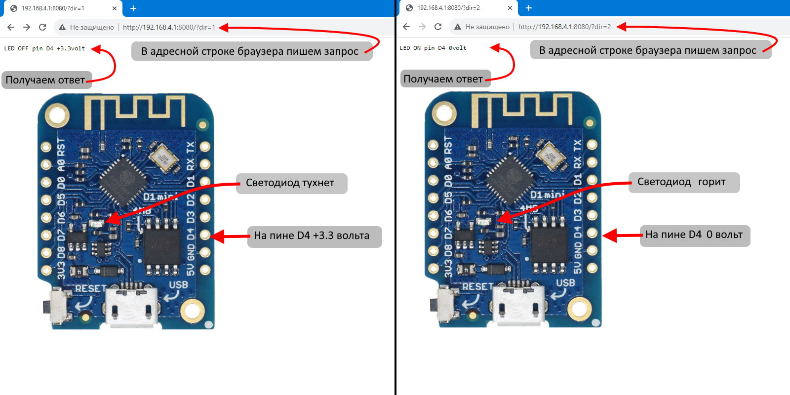
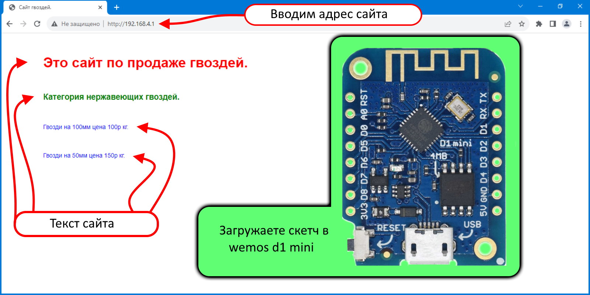
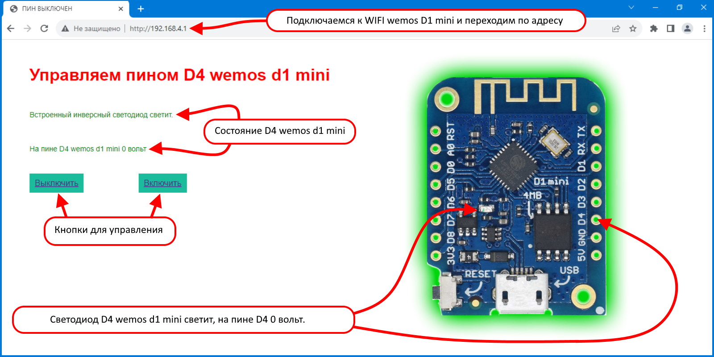
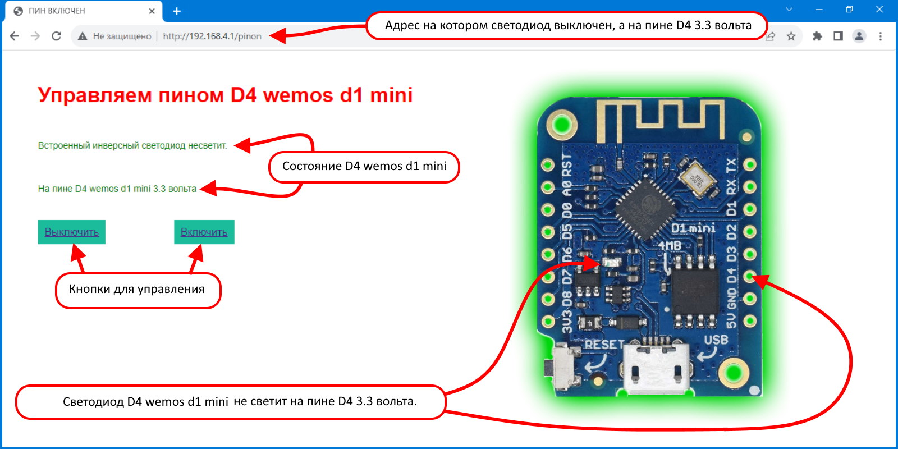
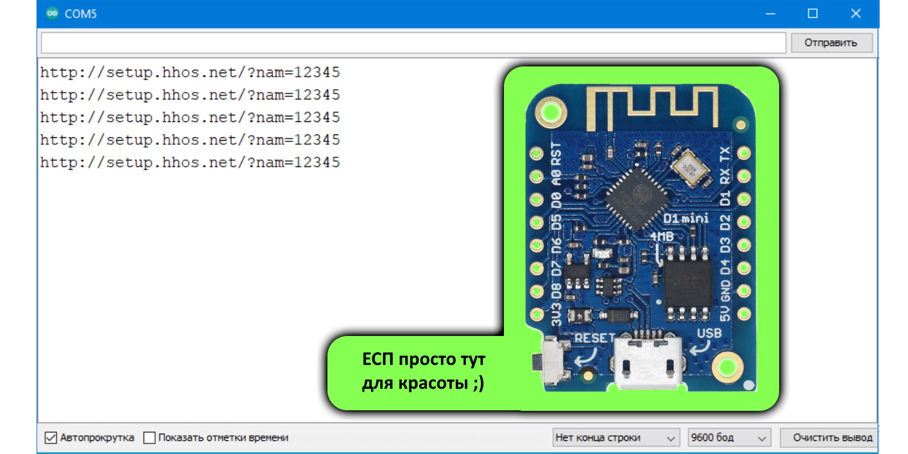
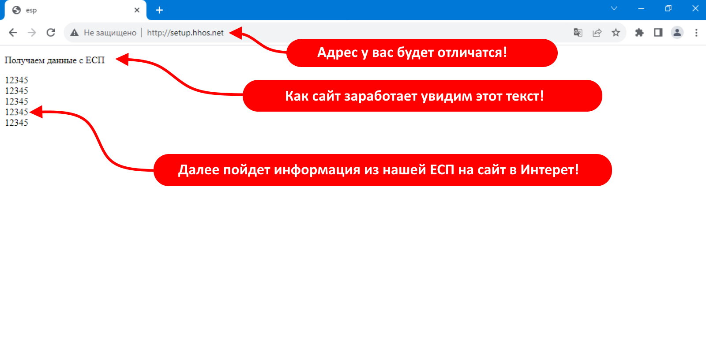

Здесь расположены небольшие скетчи (прошивки) для esp8266 для быстрой проверки различных плат и пр. |
|
Здесь расположены небольшие скетчи (прошивки) для esp8266 для быстрой проверки различных плат и пр. |
|
Настраиваем WiFi сервер на точке доступа в ЕСП. Сервер это просто программа которая отвечает на наши запросы в сети, сервер хорош тем что просто позволяет из браузера компьютера или смартфона управлять устройствами на ЕСП напрямую. Мы можем управлять и получать данные от умного дома(включать свет, открывать замок, получать расход воды и пр.) автомобилем (центральный замок, стекла, автозапуск, получать температуру двигателя и пр.), а можно просто управлять игрушкой по WiFi.
Мы будем управлять встроенным в ЕСП светодиодом, для этого загружаем в ЕСП наш скетч и подключаемся с ноутбука или смартфона к WiFi точке "WIFI_ESP9266" и вводим пароль "password", далее открываем браузер и адресную строку вводим адрес с запросом http://192.168.4.1:8080/?dir=1 (после ? заканчивается адрес и начинается запрос) и светодиод на плате погаснет а на пине д4 появится +3.3 вольта и мы увидим об этом сообщение текстом, дальше в браузере вводим http://192.168.4.1:8080/?dir=2 и светодиод загорается и мы также увидим об этом сообщение текстом, а на пине д4 у нас 0 вольт.
Конечно вводить команды не удобно но можно сделать простое приложение в онлайн конструкторе которое будет при нажатии кнопки отправлять запрос и получать текст, об этом есть информация в интернете. Минус сервера в том что сами данные не придут пока мы не сделаем запрос, например что то произойдет например сильно упадет температура в помещении и мы об этом не узнаем, в следующем примере настроим клиента вместо сервера который будет отсылать переодично данные (но это намного сложнее ведь где то надо данные эти получать).
#include <ESP8266WiFi.h> // подключаем WiFi библиотеку ESP8266WiFi.h
#include <ESP8266WebServer.h> // подключаем библиотеку веб сервера ESP8266WebServer.h
const char *ssid = "WIFI_ESP9266"; // название точки доступа
const char *password = "password"; // пароль
IPAddress ip(192, 168, 4, 1); // адрес айпи
IPAddress netmask(255, 255, 255, 0); // маска
const int port = 8080; // порт
ESP8266WebServer server(port); // выставляем порт
void setup() { // функция настроек и разового ввода данных
WiFi.mode(WIFI_AP); // настройка вай фай как точки доступа
WiFi.softAPConfig(ip, ip, netmask); // настраиваем в сервере адрес
WiFi.softAP(ssid, password); // настройки пароль и имя
pinMode(D4, OUTPUT); // пин светодиода на выход
server.on("/", HTTP_GET, loop); // в запросе после /, смотрим гет запрос, в функции loop
server.begin(); // включить сервер
}
void loop() { // запускаем бесконечную обработку кода (цикл)
server.handleClient(); // обрабатываем клиентский запрос (запрос с браузера)
String type = server.arg("dir"); // в запросе с ключем dir смотрим значение
//----------1 условие----------
if (type.equals("1")) { // если в запросе 1 то
digitalWrite(D4, 1); // светодиод на плате выключаем, пин д4 +3.3 вольта
delay (1000); // пауза 1 секунда
server.send(200, "text / plain", "LED OFF pin D4 +3.3volt"); // ответ сервера что все ок и текст в формате text / plain
}
//----------2 условие----------
if (type.equals("2")) { // если в запросе 2 то
digitalWrite(D4, 0); // светодиод на плате включаем, пин д4 0 вольт
delay (1000); // пауза 1 секунда
server.send(200, "text / plain", "LED ON pin D4 0volt"); // ответ сервера что все ок и текст в формате text / plain
}
}
В браузере после подключения к WIFI_ESP9266 вводим адрес с запросом.
В сервере на ЕСП размещаем информационный сайт.
В прошлом примере мы настроили сервер на ЕСП и управляли им с помощью ГЕТ запросов, сейчас на этом сервере разместим информационный сайт для магазина, таким способом можно делать различные текстовые сайты с небольшим дизайном.
На сайте ЕСП загружаем скетч с HTML кодом (код который понимает браузер и может по нему отображать страницу) и когда на ноутбуке или телефоне мы подключимся к сети вай фай ЕСП (точка -"WIFI_ESP9266" пароль - "password") и зайдете в браузере на страницу http://192.168.4.1/ то откроется наш сайт магазина с ценами.
#include <ESP8266WiFi.h> // подключаем WiFi библиотеку ESP8266WiFi.h
#include <ESP8266WebServer.h> // подключаем библиотеку веб сервера ESP8266WebServer.h
const char *ssid = "WIFI_ESP9266"; // название точки доступа
const char *password = "password"; // пароль
IPAddress ip(192, 168, 4, 1); // адрес айпи
IPAddress netmask(255, 255, 255, 0); // маска
const int port = 80; // порт
ESP8266WebServer server(port); // выставляем порт
void setup() { // функция настроек и разового ввода данных
WiFi.mode(WIFI_AP); // настройка вай фай как точки доступа
WiFi.softAPConfig(ip, ip, netmask); // настраиваем в сервере адрес
WiFi.softAP(ssid, password); // настройки пароль и имя
server.on("/", loop); // в запросе после / выполняем все в функции loop
server.begin(); // включить сервер
}
void loop() { // запускаем бесконечную обработку кода (цикл)
//-----------------------Страница сайта-----------------------
String ptr = "<!DOCTYPE html>\n"; //в строковую переменную складываем = указания типа текущего документа
ptr += "<html>\n"; // корневой элемент документа
ptr += "</head>\n"; // элемент метаданных документа
ptr += "<meta charset='utf-8'>\n"; // тип кодировки (чтоб русский текст был корректным)
ptr += "<style>\n"; // стили отбражения элементов (наводим красоту)
ptr += "html { font-family: Helvetica;}\n"; // для всего документа устанавливаем шрифт
ptr += "body {margin: 50px;} \n"; // для тела документа ставим отступы чтоб текст не касался стенок
ptr += "h1 {color: red; margin: 50px;}\n"; // заголовку первого уровня ставим цвет текста и настраиваем отступы
ptr += "h3 {color: green; margin: 50px;}\n"; // заголовку третьего уровня ставим цвет текста и настраиваем отступы
ptr += "p {font-size: 14px; color: blue; margin: 50px;}\n"; // абзацу ставим размер шрифта цвет текста и настраиваем отступы
ptr += "</style>\n"; // стили отбражения элементов заканчиваем
ptr += "<title>Сайт гвоздей.</title>\n"; // называем закладку браузера
ptr += "</head>\n"; // элемент метаданных документа заканчиваем
ptr += "<body>\n"; // открываем тело документа (что отображается на сайте)
ptr += "<h1>Это сайт по продаже гвоздей.</h1>\n"; // пишем в заголовке 1 уровня
ptr += "<h3>Категория нержавеющих гвоздей.</h3>\n"; // пишем в заголовке третьего уровня
ptr += "<p>Гвозди на 100мм цена 100р кг.</p>\n"; // пишем в абзаце
ptr += "<p>Гвозди на 50мм цена 150р кг.</p>\n"; // пишем в абзаце
ptr += "</body>\n"; // закрываем тело документа
ptr += "</html>\n"; // закрываем корневой элемент документа
//-------------------Конец страницы сайта----------------------------
server.handleClient(); // обрабатываем клиентский запрос (запрос с браузера)
server.send(200, "text/html", ptr ); // ответ сервера что все ок и текст формате text/html из переменной ptr
}
В браузере после подключения к WIFI_ESP9266 вводим адрес с запросом.
На сервере в ЕСП создаем сайт в котором можно упралять встроенным светодиодом.
В прошлом примере мы просто создали текстовый информационный сайт на ЕСП, сейчас будем на сайте управлять светодиодом, для этого сделаем две кнопки которые будут переводить нас по разным страницам сайта , на одной светодиод будет выключен, а на другой странице сайта включен.
Этот пример поможет сделать умный дом где мы можем включать свет, можно сделать замок который открывается с телефона и пр.
Светодиод на ЕСП инверсный так что его выключение при подаче питания на пин д4 не должно вас удивлять.
#include <ESP8266WiFi.h> // подключаем WiFi библиотеку ESP8266WiFi.h
#include <ESP8266WebServer.h> // подключаем библиотеку веб сервера ESP8266WebServer.h
const char *ssid = "WIFI_ESP9266"; // название точки доступа
const char *password = "password"; // пароль
IPAddress ip(192, 168, 4, 1); // адрес айпи
IPAddress netmask(255, 255, 255, 0); // маска
const int port = 80; // порт
ESP8266WebServer server(port); // выставляем порт
void setup() { // функция настроек и разового ввода данных
WiFi.mode(WIFI_AP); // настройка вай фай как точки доступа
WiFi.softAPConfig(ip, ip, netmask); // настраиваем в сервере адрес
WiFi.softAP(ssid, password); // настройки пароль и имя
server.on("/", pinoff); // по адресу в браузере http://192.168.4.1/ выполняем все в функции pinoff
server.on("/pinon", pinon); // по адресу в браузере http://192.168.4.1/pinon выполняем все в функции pinon
pinMode(D4, OUTPUT); // пин инверсного встроенного светодиода на выход
server.begin(); // включить сервер
}
void loop() { // запускаем бесконечную обработку кода (цикл)
server.handleClient(); // обрабатываем клиентский запрос (запрос с браузера)
}
void pinoff() { // функция pinoff в ней выключаем питание на пине д4 и выводим страницу
digitalWrite(D4, 0); // светодиод на плате включаем, пин д4 0 вольт
//-----------------------Страница сайта с выключенным пином-----------------------
String ptr = "<!DOCTYPE html>\n"; //в строковую переменную складываем = указания типа текущего документа
ptr += "<html>\n"; // корневой элемент документа
ptr += "</head>\n"; // элемент метаданных документа
ptr += "<meta charset='utf-8'>\n"; // тип кодировки (чтоб русский текст был корректным)
ptr += "<style>\n"; // стили отбражения элементов (наводим красоту)
ptr += "html { font-family: Helvetica;}\n"; // для всего документа устанавливаем шрифт
ptr += "h1 {color: red; margin: 50px;}\n"; // заголовку первого уровня ставим цвет текста и настраиваем отступы
ptr += "a { margin: 50px; background-color: #1abc9c; padding: 10px ;}\n"; // тегу ссылке настраиваем отступы и цвет фона
ptr += "p {font-size: 14px; color: green; margin: 50px;}\n"; // абзацу ставим размер шрифта цвет текста и настраиваем отступы
ptr += "</style>\n"; // стили отбражения элементов заканчиваем
ptr += "<title>ПИН ВЫКЛЮЧЕН</title>\n"; // называем закладку браузера
ptr += "</head>\n"; // элемент метаданных документа заканчиваем
ptr += "<body>\n"; // открываем тело документа (что отображается на сайте)
ptr += "<h1>Управляем пином D4 wemos d1 mini</h1>\n"; // пишем в заголовке 1 уровня
ptr += "<p>Встроенный инверсный светодиод светит.</p>\n"; // пишем в абзаце
ptr += "<p>На пине D4 wemos d1 mini 0 вольт</p>\n"; // пишем в абзаце
ptr += "<a href='/' class='button' >Выключить</a>\n"; // кнопка выключить
ptr += "<a href='/pinon' class='button' >Включить</a>\n"; // кнопка включить
ptr += "</body>\n"; // закрываем тело документа
ptr += "</html>\n"; // закрываем корневой элемент документа
//-------------------Конец страницы сайта----------------------------
server.send(200, "text/html", ptr ); // ответ сервера что все ок и текст формате text/html из переменной ptr
}
void pinon() { // функция pinon в ней включаем питание на пине д4 и выводим страницу
digitalWrite(D4, 1); // светодиод на плате выключаем, пин д4 +3.3 вольта
//-----------------------Страница сайта с включенным пином-----------------------
String ptr = "<!DOCTYPE html>\n"; //в строковую переменную складываем = указания типа текущего документа
ptr += "<html>\n"; // корневой элемент документа
ptr += "</head>\n"; // элемент метаданных документа
ptr += "<meta charset='utf-8'>\n"; // тип кодировки (чтоб русский текст был корректным)
ptr += "<style>\n"; // стили отбражения элементов (наводим красоту)
ptr += "html { font-family: Helvetica;}\n"; // для всего документа устанавливаем шрифт
ptr += "h1 {color: red; margin: 50px;}\n"; // заголовку первого уровня ставим цвет текста и настраиваем отступы
ptr += "a { margin: 50px; background-color: #1abc9c; padding: 10px ;}\n"; // тегу ссылке настраиваем отступы и цвет фона
ptr += "p {font-size: 14px; color: green; margin: 50px;}\n"; // абзацу ставим размер шрифта цвет текста и настраиваем отступы
ptr += "</style>\n"; // стили отбражения элементов заканчиваем
ptr += "<title>ПИН ВКЛЮЧЕН</title>\n"; // называем закладку браузера
ptr += "</head>\n"; // элемент метаданных документа заканчиваем
ptr += "<body>\n"; // открываем тело документа (что отображается на сайте)
ptr += "<h1>Управляем пином D4 wemos d1 mini</h1>\n"; // пишем в заголовке 1 уровня
ptr += "<p>Встроенный инверсный светодиод несветит.</p>\n"; // пишем в абзаце
ptr += "<p>На пине D4 wemos d1 mini 3.3 вольта</p>\n"; // пишем в абзаце
ptr += "<a href='/' >Выключить</a>\n"; // кнопка выключить
ptr += "<a href='/pinon' >Включить</a>\n"; // кнопка включить
ptr += "</body>\n"; // закрываем тело документа
ptr += "</html>\n"; // закрываем корневой элемент документа
//-------------------Конец страницы сайта----------------------------
server.send(200, "text/html", ptr ); // ответ сервера что все ок и текст формате text/html из переменной ptr
}
В браузере после подключения к WIFI_ESP9266 вводим адрес с запросом.
После нажатия кнопки включить.
Выводим из ЕСП данные в интернет на сайт(который мы создадим), через создание клиента и посылкой GET запросов. В прошлом скетче мы отправляли гет (запрос после адреса в адресной строке браузера) запрос на ЕСП, теперь пусть ЕСП отправляет запрос с данными для сайта в интернете, сайт их получит и запишет в простой текстовый файл {1.txt), а затем выведет в браузер на наш компьютер.
Этот пример пригодится дл мониторинга и сохранения данных например умного дома где будут передаватся данные температуры, влажности, открытия и закрытия входной двери и пр., также можно сделать метеостанцию и с нее передавать данные, можно в автомате по продаже чего угодно контролировать наличие товаров и пр.
Этот пример довольно сложный так как придется кроме заливки информации в ЕСП сделать сайт в инернете, это не сложно так как код сайта тоже есть, вам надо найти временно бесплатный хостинг с бесплатным доменом например "https://hostia.net" и разместить сайт, вот два файла сайта для загрузки , распакуйте и загрузите через менеджер файлов на сайте хостинга. Далее через некоторое время должна у вас откроется пустая страница на адресе с текстом "Получаем данные с ЕСП" и на этот сайт будет поступать наше число "12345" с переодичностью 30 сек.
#include <ESP8266WiFi.h> // подключаем библиотеку ESP8266WiFi.h
#include <ESP8266WiFiMulti.h> // подключаем библиотеку ESP8266WiFiMulti.h
#include <ESP8266HTTPClient.h> // подключаем библиотеку ESP8266HTTPClient.h
#include <WiFiClient.h> // подключаем библиотеку WiFiClient.h
ESP8266WiFiMulti WiFiMulti; // для множественных точек доступа
int value = 12345; // переменаая числа которое отправляется
void setup() { // функция настроек и разового ввода данных
WiFi.mode(WIFI_STA); // настройка вай фай режима как клиент
WiFiMulti.addAP("Dlink", "12345678"); // вайфай точка доступа и пароль (роутера, смартфона в режиме точки доступа и пр.)
Serial.begin(9600); // скорость монитора порта
}
void loop() { // запускаем бесконечную обработку кода (цикл)
String g = "http://setup.hhos.net/?nam="; // создаем строковую переменную с адресом(который у вас будет свой) и началом GET запроса
g += value; // к адресу и запросу добавляем наше значение для передачи
Serial.println(g); // выводим в монитор порта что отправляется в интернет для контроля
if ((WiFiMulti.run() == WL_CONNECTED)) { // если есть соединение то подключаемся
WiFiClient client; // включаем вайфай клиента
HTTPClient http; // настраиваем на передачу http сообщения
if (http.begin(client, g)) { // начинаем передавать сообщение
int httpCode = http.GET(); // формат GET запроса
http.end(); // конец сообщения
}
}
delay(30000); // задержка 30 секунд
}
Код страницы сайта Index.php
В мониторе порта видим полный гет запрос на сайт.
В браузере вводим адрес нашего сайта и видим данные.
